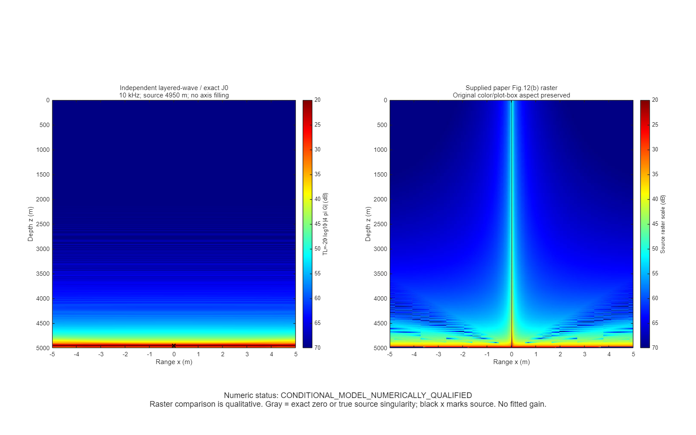
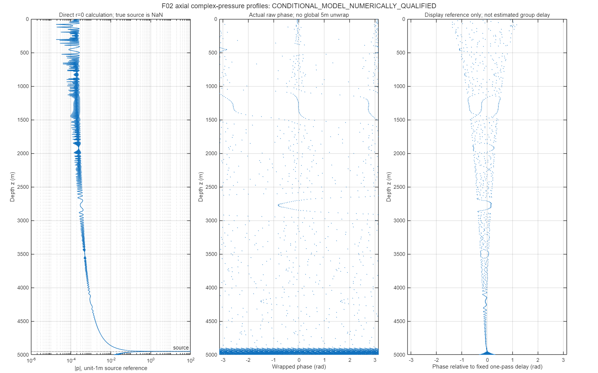
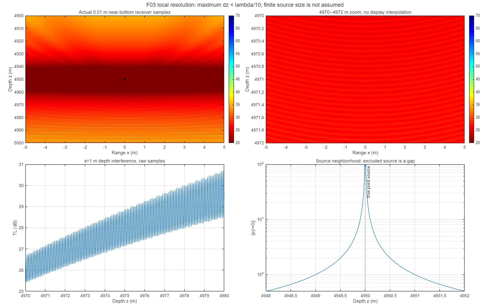
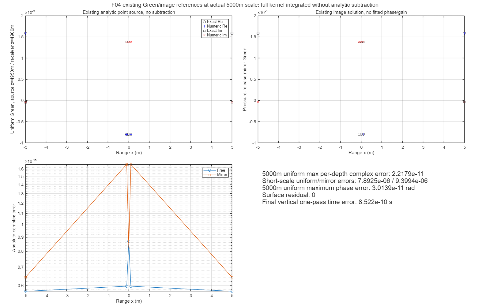
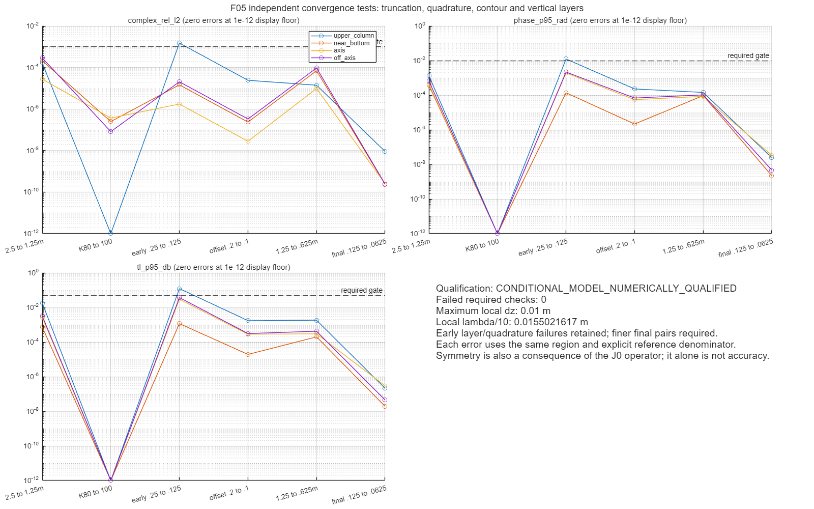

F01_full_field_vs_paper
全场：独立三维点源轴对称切面与用户论文栅格并排。原图只裁绘图区、保留原始副本与比例；对比只定性，不拟合源级。原生计算直接包含r=0。全场概览只显示真实0:5:5000m均匀子集，近底使用0.01m网格；概览不能解析全深度细驻波条纹。

数值资格：CONDITIONAL_MODEL_NUMERICALLY_QUALIFIED；必需失败检查0项。源与底质仍为明确假设，不能据此声称论文原始物理参数被复原。
run_id=20261112_full_01；现有MATLAB MCP串行，10kHz，水深5000m/源4950m。真实轴点直接计算；点源本身排除。没有Bellhop/PE调用或CIR/通信扩展。
模型与事前设计 | 获批预算范围 | 完整误差CSV | 原始轴复场CSV | 完整用户原图 | 结构指标
全场：独立三维点源轴对称切面与用户论文栅格并排。原图只裁绘图区、保留原始副本与比例；对比只定性，不拟合源级。原生计算直接包含r=0。全场概览只显示真实0:5:5000m均匀子集，近底使用0.01m网格；概览不能解析全深度细驻波条纹。

中央轴：真实复声压幅度、原始wrapped相位及固定one-pass参考相位。单频相位不等于群时延；全局5m样本不做错误解缠。源点本身是NaN标记，其他轴点直接积分。

近底：4900–5000m按0.01m采样，保留4970–4972m放大与深度剖面；所有图来自原始复场，不复制邻轴、不做显示插值。

均匀基准：复用已有Green、镜像和Weyl；本图显示5000m/源4950m同尺度对照，短尺度对照也保留；数值控制未用解析奇点减除，因此不是把解析值原样返回的恒等检查。

收敛：独立改变K截断、积分面板宽度、数值轮廓和垂向层厚，在上部/近底/轴/离轴分别报告。小误差不自动证明论文未知参数一致。

原始复Green、pressure_1m=4πGreen、完整配置与六组结果在validation同run目录。TL单位为指定单位点源参考，不是校准Pa；示例流体底cp1600/rho1.8/衰减.8dB每波长不是论文原底质。局部网格高分辨率不等于实物源区可信。